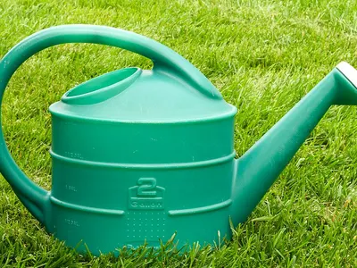
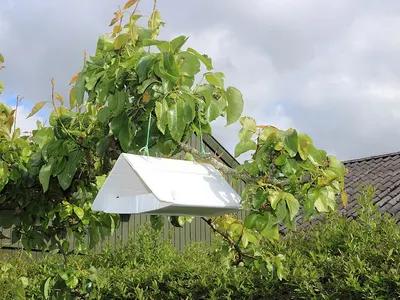
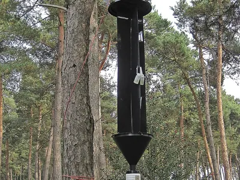
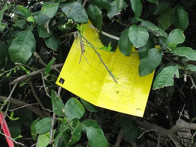
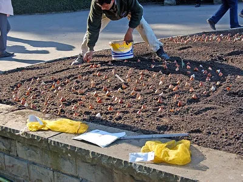
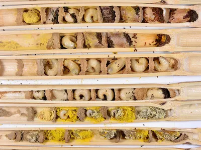
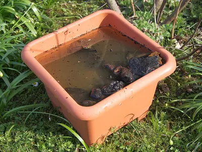

Ausrüstung für den Naturgarten
Ein naturnaher Garten braucht vor allem Geduld und ein paar wilde Ecken. Diese Dinge helfen dir, Tiere zu beobachten, Helfer anzusiedeln und Gemüse ohne Gift zu schützen.
Beobachten und bestimmen
- Beispielfoto · Foto: Michel Helmecke, CC BY-SA 2.0 de – Lizenzangaben im Bildnachweis
 Unser Tipp
Unser TippBecherlupe mit Vergrößerung
Auswahl bei Amazon
Insekten kurz einfangen, genau ansehen und wieder freilassen. Ideal auch für Kinder.
Bei Amazon ansehen Becherlupe mit Vergrößerung (Werbelink, öffnet in neuem Fenster) - Beispielfoto · Foto: Burkhard Mücke, CC BY 4.0 – Lizenzangaben im Bildnachweis

Makro-Aufsatz fürs Handy
Auswahl bei Amazon
Ein Clip-Objektiv macht aus dem Smartphone eine Makrokamera. So kannst du Käfer und Raupen später in Ruhe bestimmen.
Bei Amazon ansehen Makro-Aufsatz fürs Handy (Werbelink, öffnet in neuem Fenster) - Beispielfoto · Foto: U.S. Fish and Wildlife Service Southeast Region, Public domain – Lizenzangaben im Bildnachweis

Bestimmungsbuch Tiere im Garten
Auswahl bei Amazon
Ein handliches Buch mit Fotos hilft, auch seltenere Besucher sicher zu erkennen.
Bei Amazon ansehen Bestimmungsbuch Tiere im Garten (Werbelink, öffnet in neuem Fenster) - Beispielfoto · Foto: Hustvedt, CC BY-SA 3.0 – Lizenzangaben im Bildnachweis
 Unser Tipp
Unser TippWildkamera für den Garten
Auswahl bei Amazon
Zeigt dir, wer nachts unterwegs ist: Igel, Marder, Fuchs oder Eichhörnchen. Achte auf unsichtbares Infrarot (No-Glow).
Bei Amazon ansehen Wildkamera für den Garten (Werbelink, öffnet in neuem Fenster)
Nützlinge einsetzen
- Beispielfoto · Foto: Albarubescens, CC BY-SA 4.0 – Lizenzangaben im Bildnachweis
 Unser Tipp
Unser TippMarienkäferlarven gegen Blattläuse
Auswahl bei Amazon
Lebende Larven, die direkt auf befallene Pflanzen gesetzt werden. Wirkt am besten bei frühem Befall.
Bei Amazon ansehen Marienkäferlarven gegen Blattläuse (Werbelink, öffnet in neuem Fenster) - Beispielfoto · Foto: Bj.schoenmakers, CC BY 3.0 – Lizenzangaben im Bildnachweis

Florfliegenlarven
Auswahl bei Amazon
Die „Blattlauslöwen“ fressen Blattläuse, Spinnmilben und Thripse, auch im Gewächshaus.
Bei Amazon ansehen Florfliegenlarven (Werbelink, öffnet in neuem Fenster) - Beispielfoto · Foto: Tangopaso, Gemeinfrei – Lizenzangaben im Bildnachweis

Nematoden gegen Dickmaulrüssler
Auswahl bei Amazon
Winzige Fadenwürmer, die mit dem Gießwasser ausgebracht werden und die Larven im Boden befallen. Für Mensch, Tier und Pflanze unbedenklich.
Bei Amazon ansehen Nematoden gegen Dickmaulrüssler (Werbelink, öffnet in neuem Fenster) - Beispielfoto · Foto: PumpkinSky, CC BY-SA 4.0 – Lizenzangaben im Bildnachweis

Nematoden gegen Engerlinge
Auswahl bei Amazon
Für braune Stellen im Rasen: im Spätsommer in den feuchten Boden gießen, solange er noch warm ist.
Bei Amazon ansehen Nematoden gegen Engerlinge (Werbelink, öffnet in neuem Fenster) - Beispielfoto · Foto: Harry Higgott Thomas, Gemeinfrei – Lizenzangaben im Bildnachweis

Ohrwurm-Unterschlupf
Auswahl bei Amazon
Ein mit Holzwolle gefüllter Topf für den Obstbaum. Darin wohnen tagsüber Ohrwürmer, nachts jagen sie Blattläuse.
Bei Amazon ansehen Ohrwurm-Unterschlupf (Werbelink, öffnet in neuem Fenster)
Gemüse und Obst schützen
- Beispielfoto · Foto: Müller-Jessen, CC BY-SA 3.0 – Lizenzangaben im Bildnachweis
 Unser Tipp
Unser TippSchneckenzaun aus Metall
Auswahl bei Amazon
Die abgekantete Oberkante hält Nacktschnecken dauerhaft vom Beet fern, ganz ohne Gift.
Bei Amazon ansehen Schneckenzaun aus Metall (Werbelink, öffnet in neuem Fenster) - Beispielfoto · Foto: Srl, CC BY-SA 3.0 – Lizenzangaben im Bildnachweis
 Unser Tipp
Unser TippHochbeet aus Holz
Auswahl bei Amazon
Rückenschonend gärtnern, und mit einer Schneckenkante kommen Nacktschnecken kaum noch an Salat und Gemüse.
Bei Amazon ansehen Hochbeet aus Holz (Werbelink, öffnet in neuem Fenster) - Beispielfoto · Foto: Schlaghecken Josef, CC BY-SA 4.0 – Lizenzangaben im Bildnachweis

Kulturschutznetz
Auswahl bei Amazon
Ein feines Netz über Kohl und Möhren hält Kohlweißling, Kohlfliege und Möhrenfliege ab.
Bei Amazon ansehen Kulturschutznetz (Werbelink, öffnet in neuem Fenster) - Beispielfoto · Foto: Markus Hagenlocher, CC BY-SA 3.0 – Lizenzangaben im Bildnachweis

Leimring für Obstbäume
Auswahl bei Amazon
Hält die flugunfähigen Frostspanner-Weibchen auf. Ende September anbringen, am besten mit Abstand zur Rinde.
Bei Amazon ansehen Leimring für Obstbäume (Werbelink, öffnet in neuem Fenster) - Beispielfoto · Foto: Slaunger, CC BY-SA 3.0 – Lizenzangaben im Bildnachweis

Pheromonfalle für Apfelwickler
Auswahl bei Amazon
Zeigt, wann die Falter fliegen, und fängt Männchen ab. So weißt du, wann du nach Eiern und Raupen schauen musst.
Bei Amazon ansehen Pheromonfalle für Apfelwickler (Werbelink, öffnet in neuem Fenster) - Beispielfoto · Foto: Bj.schoenmakers, CC0 – Lizenzangaben im Bildnachweis

Pheromonfalle für Buchsbaumzünsler
Auswahl bei Amazon
Zeigt die Flugzeiten an. Etwa zwei Wochen später solltest du den Buchs auf junge Raupen kontrollieren.
Bei Amazon ansehen Pheromonfalle für Buchsbaumzünsler (Werbelink, öffnet in neuem Fenster) - Beispielfoto · Foto: USDAgov, Gemeinfrei – Lizenzangaben im Bildnachweis

Gelbtafeln
Auswahl bei Amazon
Klebetafeln, die Weiße Fliege und Trauermücken anlocken. Gut zur Kontrolle im Gewächshaus und bei Zimmerpflanzen.
Bei Amazon ansehen Gelbtafeln (Werbelink, öffnet in neuem Fenster) - Beispielfoto · Foto: Gerhard Giebener, CC BY 2.0 – Lizenzangaben im Bildnachweis

Wühlmauskorb aus Draht
Auswahl bei Amazon
Schützt Blumenzwiebeln und Wurzeln junger Obstbäume vor der Schermaus.
Bei Amazon ansehen Wühlmauskorb aus Draht (Werbelink, öffnet in neuem Fenster)
Lebensräume schaffen
- Beispielfoto · Foto: Dietmar Rabich, CC BY-SA 4.0 – Lizenzangaben im Bildnachweis
 Unser Tipp
Unser TippNisthilfe für Wildbienen
Auswahl bei Amazon
Achte auf sauber gebohrte Löcher oder Röhrchen ohne Splitter und eine regengeschützte, sonnige Lage.
Bei Amazon ansehen Nisthilfe für Wildbienen (Werbelink, öffnet in neuem Fenster) - Beispielfoto · Foto: Gilles San Martin, CC BY-SA 2.0 – Lizenzangaben im Bildnachweis

Kokons der Roten Mauerbiene
Auswahl bei Amazon
Ein Starterset zum Ansiedeln: Im Frühling schlüpfen die Bienen und bestäuben deine Obstbäume.
Bei Amazon ansehen Kokons der Roten Mauerbiene (Werbelink, öffnet in neuem Fenster) - Beispielfoto · Foto: DohleSchnackfass, CC0 – Lizenzangaben im Bildnachweis

Hummelnistkasten
Auswahl bei Amazon
Ein trockener Nistplatz für Hummelköniginnen. Im März an einen halbschattigen Platz stellen.
Bei Amazon ansehen Hummelnistkasten (Werbelink, öffnet in neuem Fenster) - Beispielfoto · Foto: Schubbay, CC BY-SA 4.0 – Lizenzangaben im Bildnachweis
 Unser Tipp
Unser TippWildblumen-Saatgut, regional
Auswahl bei Amazon
Heimische Wildblumen füttern Bienen, Schwebfliegen und Falter. Achte auf regionale Herkunft.
Bei Amazon ansehen Wildblumen-Saatgut, regional (Werbelink, öffnet in neuem Fenster) - Beispielfoto · Foto: Maja Dumat, CC BY 2.0 – Lizenzangaben im Bildnachweis

Bienen- und Insektentränke
Auswahl bei Amazon
Eine flache Schale mit Steinen als Landeplatz. Im Sommer trinken Bienen, Hummeln und Vögel daraus.
Bei Amazon ansehen Bienen- und Insektentränke (Werbelink, öffnet in neuem Fenster) - Beispielfoto · Foto: 14GTR, CC BY-SA 4.0 – Lizenzangaben im Bildnachweis
 Unser Tipp
Unser TippIgelhaus, winterfest
Auswahl bei Amazon
Ein Unterschlupf für Winterschlaf und Kinderstube. Unter Hecke oder Laub an einen ruhigen Platz stellen.
Bei Amazon ansehen Igelhaus, winterfest (Werbelink, öffnet in neuem Fenster) - Beispielfoto · Foto: Caroline Ford, CC BY-SA 3.0 – Lizenzangaben im Bildnachweis

Thermokomposter
Auswahl bei Amazon
Macht aus Küchen- und Gartenresten Humus. Regenwürmer, Blindschleichen und Igel freuen sich über den warmen Platz.
Bei Amazon ansehen Thermokomposter (Werbelink, öffnet in neuem Fenster)
Werbelink: Wenn du über diesen Link etwas kaufst, erhält der Gartentierkompass eine kleine Provision von Amazon. Für dich ändert sich am Preis nichts. Als Amazon-Partner verdiene ich an qualifizierten Verkäufen.